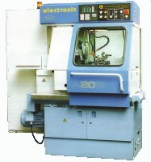

KOVOTRON s.r.o. je servisní firma specializující se na opravy, seřízení a servis křivkových i
CNC
soustružnických automatů, zejména z produkce KOVOSVIT Písek. Nabízí efektivní opravy a údržbu strojů,
aby splnily moderní požadavky na přesnost, produktivitu a složitost dílců. Spolupracuje s firmou
Ciessetrade, poskytující originální náhradní díly pro nástrojové hlavy Duplomatic.



-
Seřízení geometrie
Seřízení geometrie vozidla upravuje úhel kol pro stabilitu, komfort a rovnoměrné opotřebení pneumatik.
-
Preventivní prohlídky automatů
Preventivní prohlídky automatických převodovek zahrnují kontrolu oleje, těsnění a součástí, čímž
zajišťují delší životnost, plynulé řazení a menší riziko poruch.
-
Servis soustružnických automatů
Servis soustružnických automatů zahrnuje údržbu, seřízení a kontrolu částí stroje pro zajištění
přesnosti, spolehlivosti a prodloužení životnosti zařízení.
-
Konstrukce a výroba doplňků
Konstrukce a výroba doplňků zahrnuje návrh a realizaci prvků dle potřeb zákazníka s důrazem na
kvalitu a estetiku.
-
Seřízení a tvorba technologií
Seřízení a tvorba technologií zahrnuje optimalizaci procesů a nastavení strojů pro maximální
efektivitu a kvalitu výroby.
-
Smluvní partner
Smluvní partner Servisního střediska DUPLOMATIC nabízí autorizovaný servis, opravy a dodávky dílů s
garancí kvality a rychlosti.